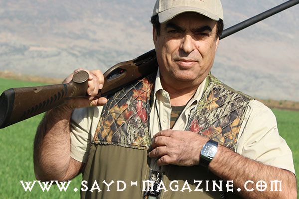
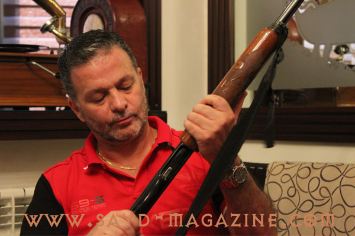
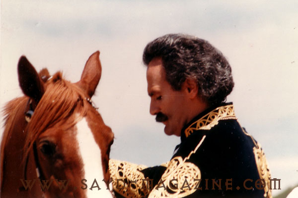
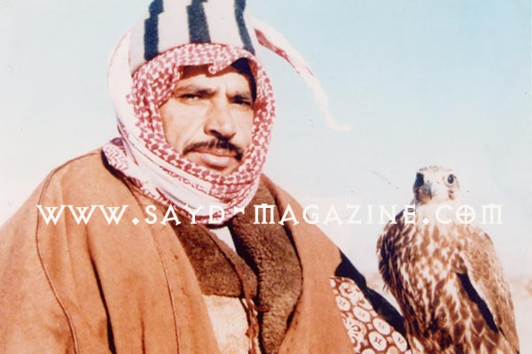
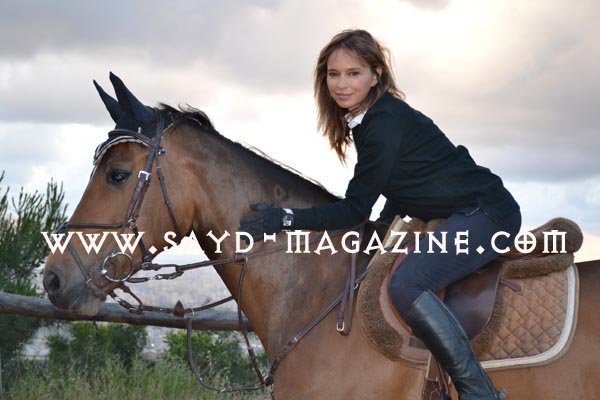
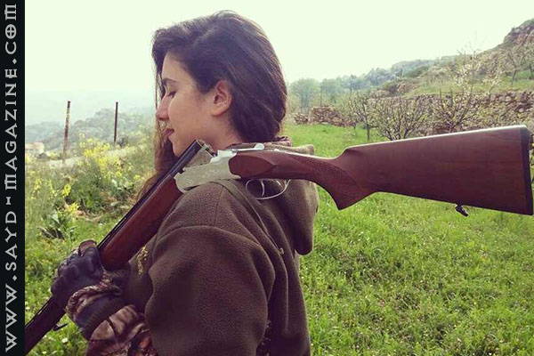
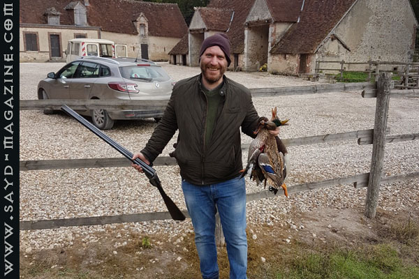
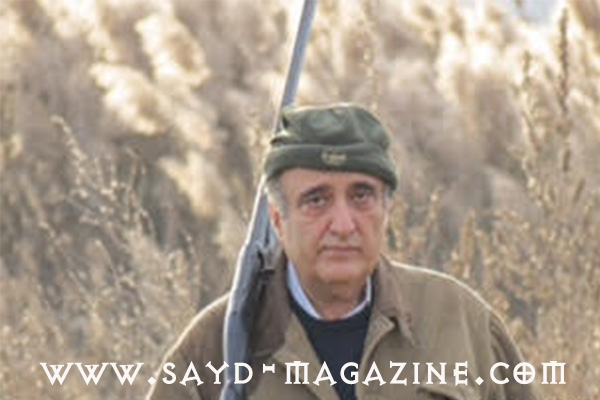

George Kardahi
“I learned from my father that a true hunter is one who gives his quarry a chance to escape.”
Read the interviewFaces from Sayd’s interview archive: hunters, a fisher, and an equestrian speaking for nature and responsibility. Quotes are taken from the original interviews. See also A Journey of Awareness and Responsibility (2016–2024).

“I learned from my father that a true hunter is one who gives his quarry a chance to escape.”
Read the interview
“I see respect for nature as a sacred duty, because trees are the children of the earth, and we must not commit a crime against the children of the earth.”
Read the interview
“Rehabilitating the hunter is necessary to protect nature, and a hunting license should be like a driving license, reviewed every few years.”
Read the interview

“A hunter must not hunt unjustly or be selfish; he must leave something for future generations.”
Read the interview
“I love nature and walking, and I do not hunt because the sounds of weapons frighten me.”
Read the interview
“Night hunting is a crime against nature and is not allowed; the laws must be applied strictly.”
Read the interview
“Hunting with nets destroys hunting, and every hunter must raise awareness of the danger of these illegal methods.”
Read the interview
“Hunting is considered the sport of nobles; what spoils it is a lack of awareness… and there must be severe penalties for those who break those laws.”
Read the interview
“The hunter respects nature, and there is a difference between hunting and extermination; the bird has as much right to the land as we do.”
Read the interview